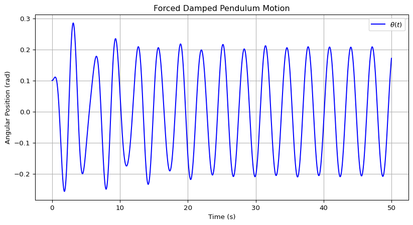
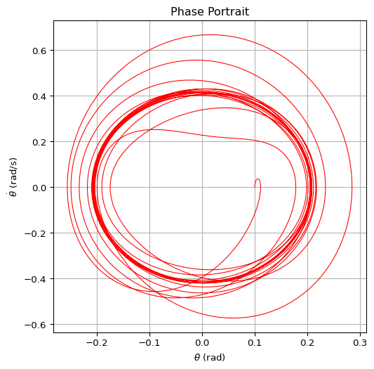
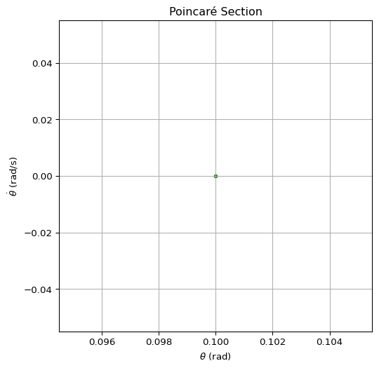
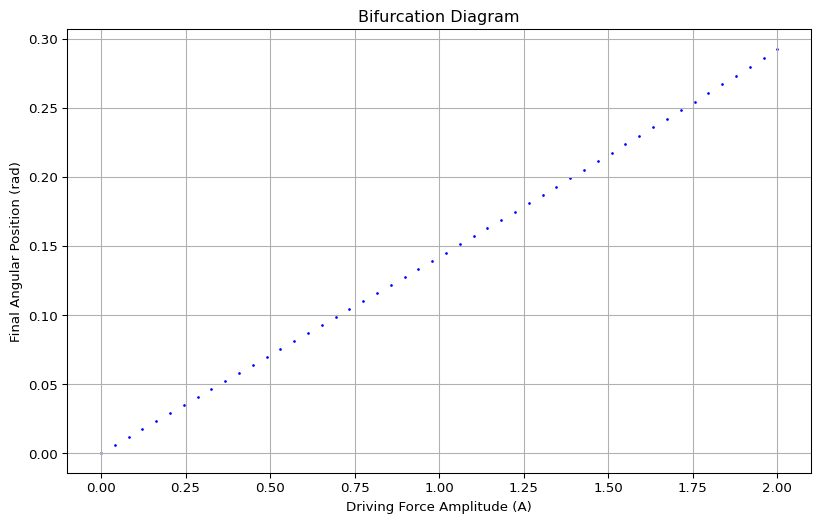

import numpy as np
import matplotlib.pyplot as plt
from scipy.integrate import solve_ivp
# Parameters
g = 9.81 # Gravity (m/s^2)
L = 1.0 # Length of the pendulum (m)
b = 0.2 # Damping coefficient
omega = 2.0 # Driving frequency
# Define the system of ODEs
def forced_damped_pendulum(t, y, A, omega):
theta, omega_dot = y
dtheta_dt = omega_dot
domega_dt = -b * omega_dot - (g / L) * np.sin(theta) + A * np.cos(omega * t)
return [dtheta_dt, domega_dt]
# Initial conditions
t0, t_end = 0, 50
initial_conditions = [0.1, 0] # Small initial angle and zero initial velocity
# Solve the system
time_eval = np.linspace(t0, t_end, 2000)
A = 1.2 # Set A for initial run
sol = solve_ivp(forced_damped_pendulum, [t0, t_end], initial_conditions, args=(A, omega), t_eval=time_eval, method='RK45')
# Extract results
theta = sol.y[0]
omega_values = sol.y[1]
time = sol.t
# Time Series Plot
plt.figure(figsize=(10, 5))
plt.plot(time, theta, label=r'$\theta(t)$', color='b')
plt.xlabel('Time (s)')
plt.ylabel('Angular Position (rad)')
plt.title('Forced Damped Pendulum Motion')
plt.legend()
plt.grid()
plt.show()
# Phase Portrait
plt.figure(figsize=(6, 6))
plt.plot(theta, omega_values, lw=0.8, color='r')
plt.xlabel(r'$\theta$ (rad)')
plt.ylabel(r'$\dot{\theta}$ (rad/s)')
plt.title('Phase Portrait')
plt.grid()
plt.show()
# Poincaré Section (Stroboscopic Map)
omega_scalar = float(np.mean(omega_values)) if isinstance(omega_values, np.ndarray) else omega
if omega_scalar != 0:
poincare_times = np.arange(t0, t_end, 2 * np.pi / omega_scalar)
else:
poincare_times = np.linspace(t0, t_end, 50) # Fallback to evenly spaced points
theta_poincare = np.interp(poincare_times, time, theta)
omega_poincare = np.interp(poincare_times, time, omega_values)
plt.figure(figsize=(6, 6))
plt.scatter(theta_poincare, omega_poincare, s=10, color='green')
plt.xlabel(r'$\theta$ (rad)')
plt.ylabel(r'$\dot{\theta}$ (rad/s)')
plt.title('Poincaré Section')
plt.grid()
plt.show()
# Bifurcation Diagram - Sweeping Driving Force Amplitude
A_values = np.linspace(0, 2, 50)
final_theta = []
for A_val in A_values:
sol = solve_ivp(forced_damped_pendulum, [t0, t_end], initial_conditions, args=(A_val, omega),
t_eval=np.linspace(t_end-10, t_end, 500), method='RK45')
final_theta.append(sol.y[0][-1])
plt.figure(figsize=(10, 6))
plt.scatter(A_values, final_theta, s=1, color='blue')
plt.xlabel('Driving Force Amplitude (A)')
plt.ylabel('Final Angular Position (rad)')
plt.title('Bifurcation Diagram')
plt.grid()
plt.show()


